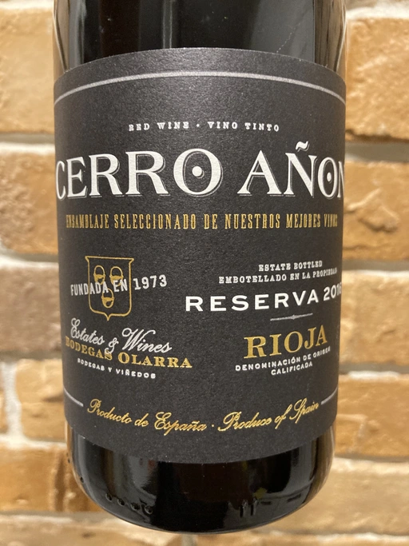

- Type
- Red Still, Dry
- Producer
- Bodegas Olarra
- Vintage
- 2016
- Location
- Spain, Rioja DOC
- Grapes
- Grenache, Graciano, Tempranillo
- Alcohol
- 14
- Sugar
- 4
- Price
- 394 UAH, 379 UAH
- Cellar
- N/A
Ratings
2020-12-29 - 7.50
Modern style Rioja. Lots of black fruits, vanilla and tobacco. Lots of oak. Silky tannins, but overall, powerful wine. Well balanced, easy to enjoy. Great QPR.
2021-05-17 - 7.00
Straight-forward modern Rioja. Fruitful, with lots of oak, vanilla and hints of tobacco. Not complicated, well made, not fascinating. At least it is easy to enjoy and has great QPR. Great for lunch.